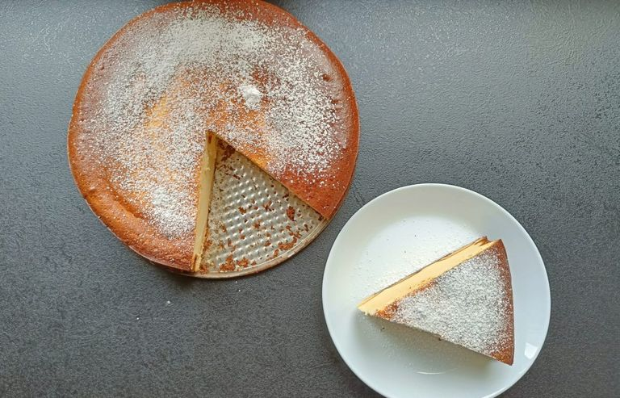

Sernik (Cheesecake) Tarifi
Bu pofuduk cheesecake tarifi sadece 4 malzemeden oluşuyor! Her seferinde kabarmış çıkıyor ve güzelce kesiliyor.
Günlerde, bayramlarda veya bir aile toplantısı için mükemmel bir cheesecake. Lezzetli ve hafif.
Bu kadar az malzemeyle bu kadar lezzetli bir şey yapılabileceğini beklemiyordum ve denedim, geliştirdim şimdi sizlere sunuyorum.
Herkes denemeli ve herkese denetmeli.
İçindekiler
- 1 kg iki kez öğütülmüş cottage cheese (ya da tuzsuz yumuşak lor peyniri)
- 1 konserve (530 gram) şekerli yoğunlaştırılmış süt (süt reçeli)
- 6 adet yumurta
- 2 vanilyalı puding (şekersiz olmalıdır)
- Bir çimdik tuz
Talimatlar
- Tüm malzemeler oda sıcaklığında olmalıdır. Malzemeleri en az 2 saat önceden buzdolabından çıkarın.
- Yumurta beyazlazlarını ayırırken çok dikkatli bir şekilde ayırın ve mikserle çırpabileceğiniz bir kaba koyun.
- İkinci kaseye (benim yaptığım karışım karıştırma makinasında olduğu için büyük bir robot kasesi kullandım) cottage cheese ( ya da lor peyniri)ni ekleyiniz. Ardından yoğunlaştırılmış süt ve biraz vanilyayla çırptığınız yumurta sarılarını ekleyin
- Toz pudingleri de ekleyip orta kademede karıştırmaya başlayın.
- Yumurta beyazlarını köpürene ve kabı ters çevirdiğinizde düşmeyecek kıvama gelene kadar çırpınız.
- Yumurta aklarını makinadaki karışım homojen olunca ekleyiniz ve düşük kademede karıştırınız.
- Tereyağı ile kelepçeli kalıbın tabanını yağlayınız. Böylece piştikten sonra daha kolay bir şekilde tabandan ayrılacaktır.
- Tereyağı ile yağladığınız kelepçeli kalıba bisküvileri diziniz.
- Bisküvilerin üzerine önce biraz bastırın ve tabana yaapıştığından emin olun, sonra az miktarda cheesecake karışımından ekleyin ve bisküvilerin üzerine yayın.
- Geriye kalan karışımı da ekleyin ve cheesecakeimizi önceden ısıtılmış 170 derecelik (alt-üst, sıcak havasız) fırının orta rafına koyuyoruz.
- Bir fırına dayanıklı kaseyi (alt kat fırın tepsisi ne koyun ve içine 2-3 bardak su dökün) 30 dakika 170 derecede pişirin. (Su koymasanız da lezzetli olacaktır.)
Bu süreden sonra sıcaklığı 140 dereceye düşürün ve 40-45 dakika pişirin. - Bu süreden sonra fırını kapatın ama cheesecake’i içinden çıkarmayın. Sadece yaklaşık 15-20 dakika sonra kapı aralıkken soğutuyoruz.
- Ve en zor adım. Cheesecake’ i tam olarak soğumadan asla dilimlemeyin. Soğuduktan sonra dilimleyin. İsterseniz üzerine pudra şekeri dökebilirsiniz. Afiyet olsun.